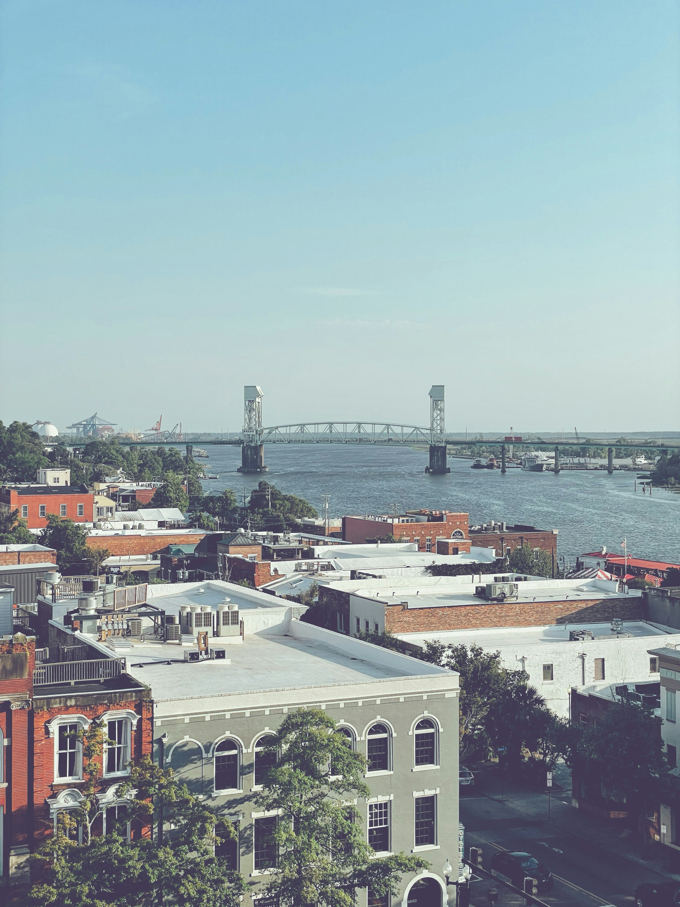

Your first visit starts here
River days.
Coastal ways.
Welcome to Wilmington, North Carolina. Follow the Cape Fear River, wander downtown streets, and leave a little room for the coast.
Find your first adventureA few good places. Plenty of room to explore.

Start by the river. Downtown Wilmington, North Carolina
Make time for the coast. Nearby Wrightsville Beach is a separate beach town.
Get to know the River DistrictTwo ways to get to know the area
Follow your curiosity.
Riverfront cafés, garden paths and a beach-town detour. Start with what sounds like your kind of day.

01 · Explore
A little outside time.
Walk the Riverwalk, discover Airlie Gardens, or head to nearby Wrightsville Beach for an ocean-side change of pace.
Explore things to doPhoto by-: Lwilliams82 - public domain.


02 · Taste
Come hungry.
Make a downtown coffee stop, try Latin-inspired cooking, and discover a restaurant celebrating North Carolina seafood.
Discover food & diningPhoto by Shellfish2008 - public domain.

An easy first day
Keep it simple. Stay curious.
-
Morning
Start with a coffee.
Ease into downtown at Bespoke, then leave time to explore the surrounding streets.
-
Afternoon
Find the waterfront.
Head to the Riverwalk for Cape Fear River views and a relaxed introduction to the city.
-
Evening
Make dinner the destination.
Look at Seabird’s seasonal menu, or choose another downtown stop from our dining guide.